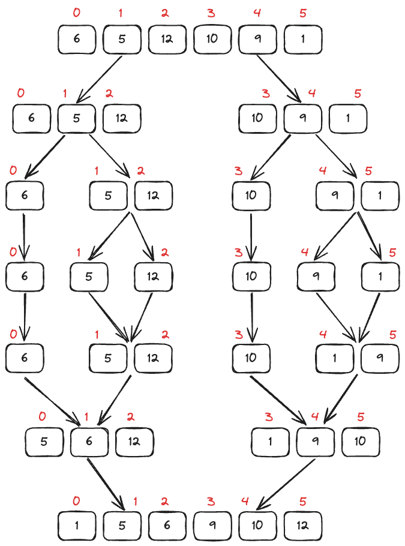

Merge Sort
Merge sort merupakan algoritma sorting yang menggunakan pendekatan divide and conquer. Algoritma ini secara rekursif membagi array menjadi bagian-bagian yang lebih kecil, kemudian diurutkan dan digabungkan, sehingga didapatkan array yang sudah utuh dan terurut.
Divide and Conquer Merge Sort
Dengan menggunakan pendekatan divide and conquer, sebuah masalah (dalam hal ini data) dibagi menjadi masalah yang lebih kecil (sub-masalah). Ketika solusi untuk setiap sub-masalah sudah siap, hasilnya akan digabungkan, sehingga masalah utama dapat dipecahkan.
{kind=link}
Simulasi Umum Merge Sort
Misalkan, terdapat sebuah array A yang memiliki index 0 sampai index 5. Penjelasan tersebut disingkat menjadi A[0..5]. Dimulai pada tahap divide, array tersebut akan dipecah menjadi 2 bagian dengan ukuran yang sama besar, yaitu A[0..2] dan A[3..5]. Kemudian, A[0..2] akan dipecah lagi menjadi A[0..0] dan A[1...2]. Hal ini akan terus dilakukan sampai semua data terpecah. Setelah itu, masuk ke dalam tahap conquer, array akan diurutkan dan digabungkan secara bersamaan. Misalkan, A[0..0] dan A[1..2] akan digabungkan menjadi A[0..2] yang sudah terurut. Hal ini akan terus dilakukan sampai semua data menjadi utuh, sehingga menghasilkan array yang urut.
Algoritma Divide Merge Sort
Berikut adalah kode untuk pemecahan algoritma merge sort.
public void mergeSort(int[] array, int start, int end) {
if(start >= end) {
return;
}
int mid = (start + end) / 2;
mergeSort(array, start, mid);
mergeSort(array, mid + 1, end);
merge(array, start, mid, end);
}
Berdasarkan kode di atas, dibuat sebuah method rekursif bernama mergeSort. Method rekursif artinya method yang memanggil dirinya sendiri. Terlihat bahwa di dalam method mergeSort terdapat pemanggilan method mergeSort. Pemanggilan method mergeSort dilakukan sebanyak dua kali untuk memecah array menjadi dua bagian yang lebih kecil, yaitu antara awal (start) sampai tengah (mid) dan setelah tengah (mid+1) sampai akhir (end). Setelah itu, dipanggil method merge yang akan melakukan pengurutan dan penggabungan array.
Algoritma Conquer Merge Sort
Berikut adalah pseudocode untuk pengurutan dan penggabungan algoritma merge sort.
Apakah terdapat salah satu penunjuk array yang sudah mencapai akhir?
Tidak:
Bandingkan data array pertama yang dipilih dengan data array kedua yang dipilih
Masukan data yang lebih kecil dari kedua array tersebut ke array yang sudah diurutkan
Pindahkan posisi penunjuk array pada data yang lebih kecil ke setelahnya
Ya:
Masukan semua sisa data array yang belum mencapai akhir ke dalam array yang sudah diurutkan.
{kind=link}
Simulasi Conquer Merge Sort
Berdasarkan pseudocode dan simulasi di atas, dilakukan pengecekan antara dua buah array yang akan digabungkan. Masing-masing array dimulai dari posisi paling awal, yaitu 0. Program akan membandingkan antara array pertama dengan array kedua, mana yang memiliki nilai terkecil. Array yang memiliki nilai terkecil akan dimasukan ke dalam array yang sudah diurutkan dan posisinya digeser satu ke kanan. Hal itu terus dilakukan sampai salah satu array sudah mencapai akhir. Terakhir, array yang masih bersisa akan langsung dimasukan ke dalam array yang sudah diurutkan.
Berdasarkan penjelasan di atas, dapat dibuatkan kode sebagai berikut.
public void merge(int[] array, int start, int mid, int end) {
int totalLeft = mid - start + 1;
int totalRight = end - mid;
int arrayLeft[] = new int[totalLeft];
int arrayRight[] = new int[totalRight];
for (int i = 0; i < totalLeft; i++) {
arrayLeft[i] = array[start + i];
}
for (int j = 0; j < totalRight; j++) {
arrayRight[j] = array[mid + 1 + j];
}
int positionLeft = 0;
int positionRight = 0;
int positionSort = start;
while (positionLeft < totalLeft && positionRight < totalRight) {
if (arrayLeft[positionLeft] <= arrayRight[positionRight]) {
array[positionSort] = arrayLeft[positionLeft];
positionLeft++;
} else {
array[positionSort] = arrayRight[positionRight];
positionRight++;
}
positionSort++;
}
while (positionLeft < totalLeft) {
array[positionSort] = arrayLeft[positionLeft];
positionLeft++;
positionSort++;
}
while (positionRight < totalRight) {
array[positionSort] = arrayRight[positionRight];
positionRight++;
positionSort++;
}
}
Implementasi Merge Sort
Apabila kode yang sudah dijelaskan pada bagian atas digabungkan, akan tampak seperti berikut.
public class Main {
public void merge(int[] array, int start, int mid, int end) {
int totalLeft = mid - start + 1;
int totalRight = end - mid;
int arrayLeft[] = new int[totalLeft];
int arrayRight[] = new int[totalRight];
for (int i = 0; i < totalLeft; i++) {
arrayLeft[i] = array[start + i];
}
for (int j = 0; j < totalRight; j++) {
arrayRight[j] = array[mid + 1 + j];
}
int positionLeft = 0;
int positionRight = 0;
int positionSort = start;
while (positionLeft < totalLeft && positionRight < totalRight) {
if (arrayLeft[positionLeft] <= arrayRight[positionRight]) {
array[positionSort++] = arrayLeft[positionLeft++];
} else {
array[positionSort++] = arrayRight[positionRight++];
}
}
while (positionLeft < totalLeft) {
array[positionSort++] = arrayLeft[positionLeft++];
}
while (positionRight < totalRight) {
array[positionSort++] = arrayRight[positionRight++];
}
}
public void mergeSort(int[] array, int start, int end) {
if(start >= end) {
return;
}
int mid = (start + end) / 2;
mergeSort(array, start, mid);
mergeSort(array, mid + 1, end);
merge(array, start, mid, end);
}
public void print(int[] numbers) {
for (int number : numbers) {
System.out.print(number + " ");
}
}
public Main() {
int[] numbers = {6, 5, 12, 10, 9, 1};
mergeSort(numbers, 0, numbers.length - 1);
print(numbers);
}
public static void main(String[] args) {
new Main();
}
}
1 5 6 9 10 12
Kompleksitas Waktu Merge Sort
Pada algoritma merge sort, ketiga kasus memiliki kompleksitas waktu yang sama, yaitu O(n log n). Pada saat melakukan pemecahan array menjadi dua bagian dihasilkan kompleksitas waktu O(log n). Kemudian, pada saat melakukan penggabungan array dilakukan iterasi sejumlah data yang diurutkan, sehingga dihasilkan kompleksitas waktu O(n).
Kompleksitas Ruang Merge Sort
Pada algortima merge sort, ketiga kasus memiliki kompleksitas ruang yang sama, yaitu O(n). Hal ini disebabkan karena algoritma merge sort membutuhkan array tambahan sejumlah dengan jumlah data.